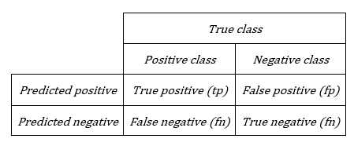
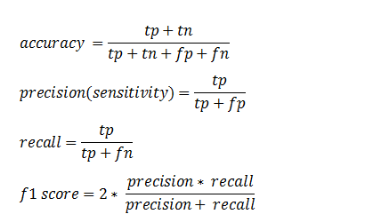
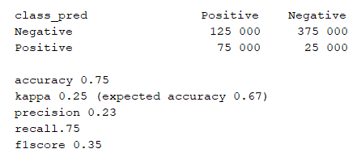

Imbalanced Classes¶
I am currently working on a binary classification problem whereby one of my classes contains more than 90% of the individuals. This is a common problem in fraud detection and customer churn prediction which makes both the modelling and the evaluation of the model more difficult. However, there are ways to overcome these problems. Here, I will present the two approaches that I have used.
The first step is to create duplicate individuals for the smaller class to reduce the imbalance. This is a simple step to include in the modelling process and can dramatically improve the model quality. In my case, I have first created stratified samples with 70% of the individuals from the negative class and 70% of the individuals from the positive class for the training dataset. This ensures that there is a reasonable amount of individuals from the smaller positive class in the training data. Then I have created enough duplicates of the smaller positive class for the training data so that the classes are roughly balanced. The remaining 30% of the data are put into the test dataset without any duplication. I could have added duplicates to the test data as well but I am comparing different models for the same test and training datasets and I do not see the value in artificially inflating my quality measures without any real gain in information.
Working in PySpark 2.0 and using the Zeppelin interpreter the code looks like this:
#Create the stratified training dataset
train = df.sampleBy("class", fractions={"Negative": 0.7, "Positive": 0.7}, seed=0)
#Create the test dataset
test=df.join(train, "row_id", "left_anti")
#Create a variable containing the duplicates for the smaller class
duplicates=train.filter(train.class == 'Positive')
#Add the duplicates to the training dataset
for index in range(10):
train=train.union(duplicates)
The seed is set for reproducibility which I need for comparing different models on different days. Later in the modelling process, I use the CrossValidator function on the training samples to test different parameters. This reintroduces some randomness to the choice of training samples. The data are either transformed before or after the sampling into a format suitable for the algorithms. This is done using the likes of: StringIndexer, VectorAssembler and either VectorIndexer or OneHotEncoder, depending on the algorithm.
Once a model has been fitted, we need to evaluate its quality. If 90% of the individuals are in the negative class and my model predicts that 100% of the individuals are in this negative class then I will have a 90% accuracy rate, yet the model is worthless. So accuracy is not always a good choice and we have to use other metrics. As a starting point, we can look at the confusion matrix which compares the actual classes with the classes predicted. This can give us an overall idea of the model quality. However, if we want to compare different models then using a confusion matrix quickly becomes a headache. Also, if we want to use an automatic tuning algorithm we are going to have to use a single statistic to compare the different models.
Here is a confusion matrix followed by some commonly used metrics:
 {kind=link}
{kind=link}
- A less standard statistic, which is not an inbuilt function in
PySpark, is the kappa coefficient.
{kind=link}
Interpreting the measures:
Accuracy – the global rate of correct classification.
Precision – the rate of correct classification for the positive class. The precision will be 1 if the positive class is pure, which is to say if there are no negative individuals incorrectly classed as positive.
Recall – the rate of true positives. The recall will be 1 if all of the positive class individuals are classed as positive.
F1 score – a measure combining the precision and the recall. This measure does not have a direct interpretation. We want to maximize the f1 score by maximizing the precision and the recall simultaneously.
Kappa - an indicator measuring the model performance against a model which assigns classes randomly. Landis & Koch (1977) proposed magnitude guidelines but their scale is disputed. Given I am using it to compare different models, I am simply looking for a higher value.
Given my context, I am most interested in identifying the individuals in the positive class and am not so worried if there are a large number of negative individuals incorrectly classed as positive. This means that a model is better if its recall is higher even if the precision is lower. Even though I calculate the accuracy, I only use it in conjunction with the kappa.
I implemented a function printing all of these measures. The input of my function is a confusion matrix generated from the predictions on the test dataset. The strings had been transformed into zeros and ones by the data pre-processing stage but now I want to reintroduce my labels which I also do before inputting the predictions into my function metrics.
#Load the libraries needed
from pyspark.ml.feature import IndexToString
# Get the predictions for the test dataset
predictions = model.transform(test)
# Correct the labels
idx_to_string = IndexToString(inputCol="prediction", outputCol="pred",labels=['Negative','Positive'])
predictions=idx_to_string.transform(predictions)
# Create the
m=predictions.crosstab("class","pred")
metrics(m)
Whereby metrics is my function defined as below:
# Import the necessary libraries
import pandas as pd
import numpy as np
from pyspark.sql.functions import *
# Define the function
def metrics(m):
# Print the confusion matrix
m.show()
# Calculate the number of true positives
f=m.select(when(m.class_pred=='Positive',m.Positive).alias('count')).toPandas()
tp=f['count'].sum()
# Calculate the number of true negatives
f=m.select(when(m.class_pred=='Negative',m.Negative).alias('count')).toPandas()
tn =f['count'].sum()
# Calculate the number of false positives
f=m.select(when(m.class_pred=='Negative',m.Positive).alias('count')).toPandas()
fp=f['count'].sum()
# Calculate the number of false negatives
f=m.select(when(m.class_pred=='Positive',m.Negative).alias('count')).toPandas()
fn =f['count'].sum()
# Calculate the total number of individuals
n = float(tp+tn+fp+fn)
# Calculate the statitistics
accuracy = float(tp+tn)/n
recall = float(tp)/(tp + fn)
precision= float(tp)/(tp + fp)
f1score= (2 * precision* recall) / (precision + recall)
# Calculate the kappa coefficient
p_ob = accuracy #observed probability
p_pos =float(tp+fp)*(tp+fn)/(n*n)
p_neg =float(tn+fn)*(fp+tn)/(n*n)
p_exp = p_pos + p_neg #expected probability
kappa=(p_ob - p_exp)/(1-p_exp)
print "accuracy", np.round(accuracy,2)
print "kappa", np.round(kappa,2), "(expected accuracy ", np.round(p_exp,2), ")"
print "precision ", np.round(precision,2)
print "recall", np.round(recall,2)
print "f1score", np.round(f1score,2)
Below is a fictional result to give you an idea of the output. Say we have 500 000 individuals in the negative class and 50 000 in the positive class of the test dataset. Imagine that the model has correctly classed 75% of the positives as positive and 75% of the negatives as negative. This gives us the following:
{kind=link}
So we can see that the accuracy is 75% as intended and that equally the recall is 75%. However the other measures of kappa, precision and f1 score are not great due the large number of false positives. However, in my context this model could still be useful since I am particularly interested in maximizing the recall.
If we want to automatically tune the in-built MulticlassClassificationEvaluator has metric choices including ‘accuracy’ and ‘f1’, but not the kappa coefficient. To overcome this problem I adapted the CrossValidator function to allow custom metrics similar to what has been done here (https://stackoverflow.com/questions/44249089/custom-evaluator-during-cross-validation-spark). It was also necessary to adjust the metrics function to output the kappa coefficient rather than printing the various statistics.
Just as a final reminder, I am programming in PySpark version 2.0 and using the ML library not MLlib. I tested the code in PySpark version 2.1 and Python 3.0 in Jupyter notebook. So that it would work, I had to add brackets to the print statements and cast the predictions from double to integer before using IndexToString.
Predictions = predictions.withColumn(‘prediction’, predictions.prediction.cast(“integer”))